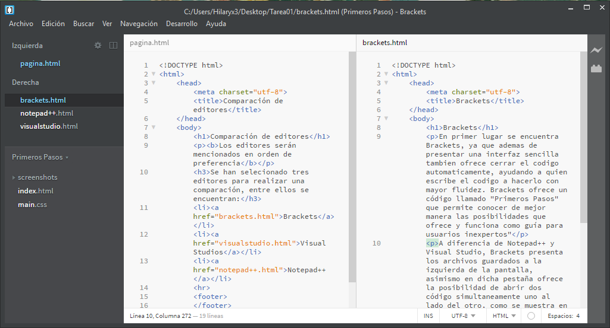

En primer lugar se encuentra Brackets, ya que ademas de presentar una interfaz sencilla tambien ofrece cerrar el codigo automaticamente, ayudando a quien escribe el codigo a hacerlo con mayor fluidez. Brackets ofrece un código llamado "Primeros Pasos" que permite conocer de mejor manera las posibilidades que ofrece y funciona como guía para usuarios inexpertos"
A diferencia de Notepad++ y Visual Studio, Brackets presenta los archivos a la izquierda de la pantalla, asimismo en dicha pestaña ofrece la posibilidad de abrir dos código simultaneamente uno al lado del otro, como se muestra en la siguiente imagen.
